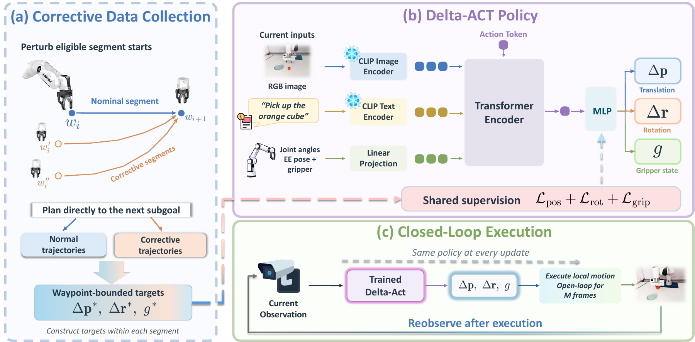
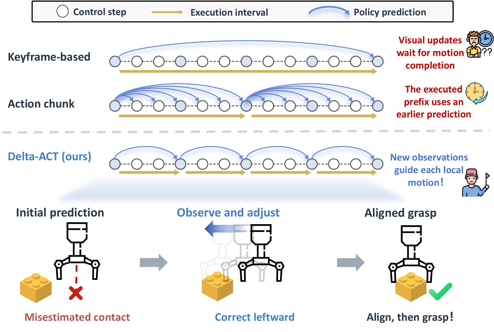
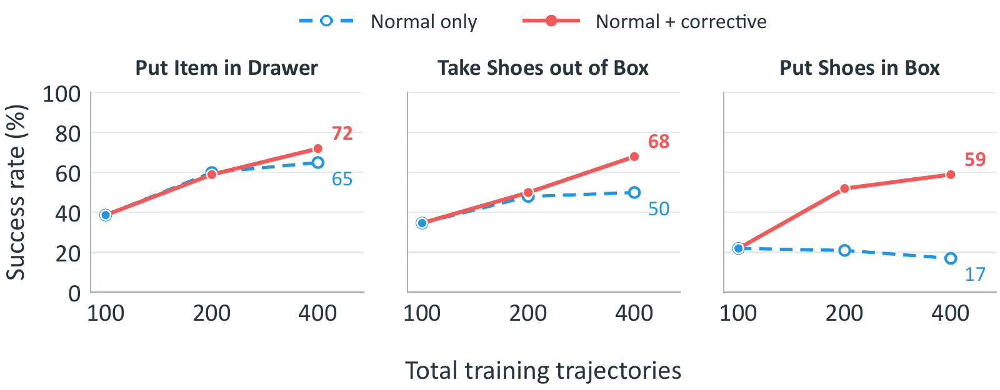
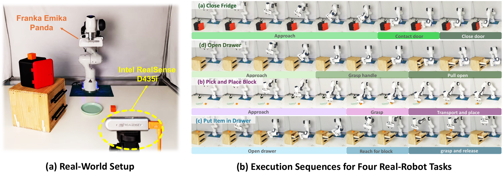

Collect correction data
Perturb eligible segment starts and plan directly to the next subgoal.
Closed-loop robotic manipulation
Delta-ACT predicts short relative motions from the latest observation and learns corrective behavior from automatically collected trajectories.
The problem
With limited clean demonstrations, small prediction and execution errors move the robot into states it has not learned to handle. Delta-ACT pairs frequent observation updates with training data that explicitly teaches local corrections.
Method

At each replan the policy takes the current single-view RGB observation, the language instruction, and the robot state, and outputs one relative command at = (Δpt, Δrt, gt): a position increment, a world-frame rotation increment, and a gripper command. Each command is tracked over m control frames before the policy reobserves. Normal and corrective trajectories train a single policy through position, rotation, and gripper losses — no separate recovery module is needed at inference.
An average command length of ≈2 cm preserves precision while limiting error accumulation.

Eligible segment starts are perturbed and the controller plans directly to the next subgoal. The resulting trajectories explicitly teach the policy how to recover from states that clean demonstrations rarely cover.
Perturb eligible segment starts and plan directly to the next subgoal.
Use the current RGB observation, language instruction, and robot state.
Execute a local motion, observe again, and predict the next correction.
Results


Demonstrations
Real-world comparisons use matched playback speeds within each task, and outcome labels follow the experiment file names. Simulation clips play at original speed.
Task success over 10 trials: ACT 9/10 · Delta-ACT 10/10
Task success over 10 trials: ACT 1/10 · Delta-ACT 3/10
Task success over 10 trials: ACT 7/10 · Delta-ACT 9/10
Task success over 10 trials: ACT 3/10 · Delta-ACT 3/10
Simulation
Delta-ACT executions at original speed across the RLBench task suite.